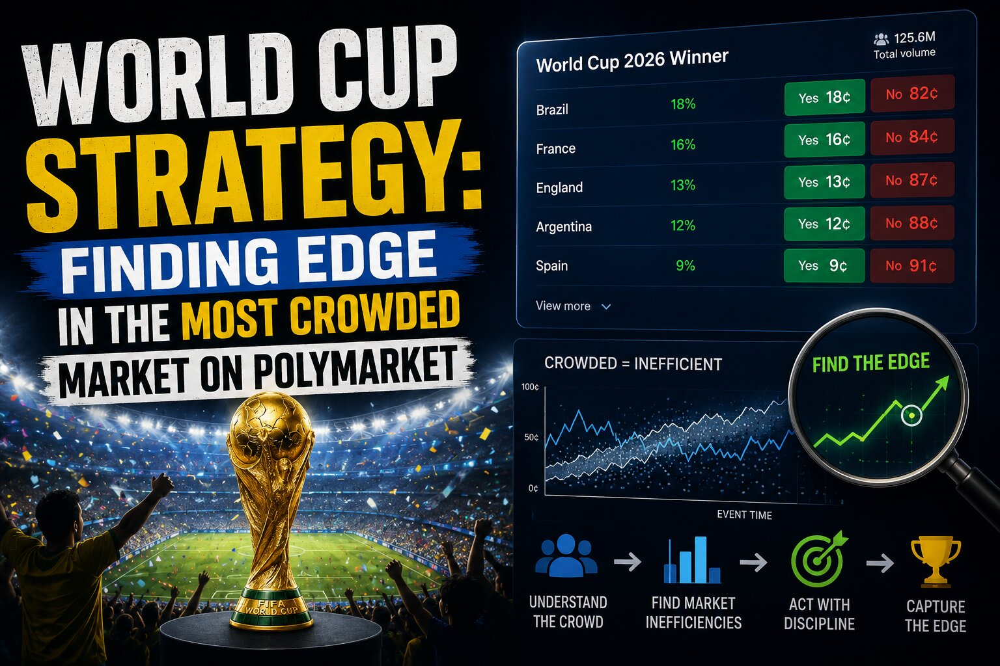

World Cup Strategy: Finding Edge in the Most Crowded Market on Polymarket

Every World Cup, the same question shows up in the Polymarket subreddit: what's the strategy here? It's a fair question, because the World Cup is unlike almost any other event on the platform. It's not a niche market with a handful of informed traders quietly working it out — it's a global event that hundreds of millions of people have an opinion on, and a large chunk of them are trading that opinion. That changes the math on where edge actually lives.
Why "I watched the match" isn't a strategy
The first thing worth accepting is that knowing soccer is not the same as having an edge on soccer markets. World Cup markets are crowded, emotional, and full of people who genuinely understand the sport better than you do. That doesn't mean there's no edge to be found — it means the obvious reads get priced in fast. If your entire thesis is "I watched the match and I have a feeling," you're competing directly with the sharpest, most engaged crowd on the platform, and you're probably arriving late.
Edge, in a market this saturated, tends to come from somewhere more specific than general sports knowledge. It comes from being right about something the market hasn't fully digested yet.
Where the actual edge tends to hide
A few categories of information are worth paying closer attention to, precisely because casual bettors tend to underweight or misprice them:
Lineup news that changes the shape of the match. A confirmed absence or a surprise starting eleven can shift a team's whole approach, not just its talent level, and the market doesn't always reprice that instantly.
Injury or suspension information. This is adjacent to lineup news but distinct — the market often reacts to the headline ("star player out") without fully reasoning through what that means tactically.
Weather and venue effects. Heat, altitude, and pitch conditions are unglamorous, which is exactly why they get underpriced relative to their actual impact on pace and stamina.
Incentives in the final group match. Dead rubbers, needing a specific goal differential, or two teams that both benefit from a draw — these situations can make a match's true odds diverge sharply from what a naive "who's the better team" model would say.
Markets with clear wording and low settlement risk. This one isn't about the sport at all. It's about not getting caught on the wrong side of ambiguous resolution criteria — a lesson that applies well beyond soccer.
A word of caution on outrights
Group-stage outright markets — betting on who wins the whole tournament, or a specific group, before the bracket takes shape — deserve extra caution. One unusual draw result can scramble the entire tree of possibilities, and a position that looked well-reasoned on day one can become dead weight by day three for reasons that had nothing to do with your original read. If you're still building your instincts, smaller and cleaner markets make better labs than outrights. You get faster feedback, and the mistakes are cheaper.
The test before you click buy
Maybe the simplest filter for any World Cup trade is this: can you explain the mispricing before you place it? Not the outcome — the mispricing. What does the market believe, what do you believe instead, and why do you think you're seeing something it isn't?
If the honest answer is just "vibes," that's usually a sign the spread is already accounting for people who feel the way you do — and it's often waiting with a small invoice for the privilege.
The takeaway
The World Cup isn't a market where knowledge of the sport is worthless — it's a market where that knowledge is already priced in faster than almost anywhere else on the platform. The edge lives in the specifics: lineups, incentives, conditions, and settlement wording, not in having watched more matches than the person on the other side of your trade.
Disclaimer: This post summarizes general strategy discussion shared publicly online. It is not financial advice. Prediction markets carry real financial risk, including the risk of significant loss, and any decision to trade should be made on your own judgment and risk tolerance.